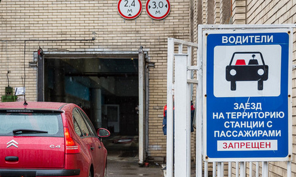

государственный технический осмотр — совокупность организационно-технических мер, направленных на недопущение к участию в дорожном движении транспортных средств, не соответствующих требованиям технических нормативных правовых актов республиканского органа государственного управления по стандартизации, метрологии и сертификации (далее — технические нормативные правовые акты);

Фото с сайта onliner.by.
Государственный технический осмотр, или как часто говорят, техосмотр предназначен для того,
чтобы по дорогам не ездили частично неисправные автомобили, опасные для других участников дорожного движения.
Напомним, что в главе 26 ПДД и приложении 4 ПДД будет перечислен неисправностей, с которыми нельзя пройти
гостехосмотр, и соответственно, участвовать в дорожном движении.
С 2014 года в Беларуси ввели, "транспортный налог (налог на авто)" - государственную пошлину за выдачу
разрешения на допуск транспортного средства к участию в дорожном движении.
Без оплаты этой пошлины нельзя пройти техосмотр.
Хорошая статья - инструкция по прохождению техосмотра:
как пройти техосмотр в Минске.
Почитаете ее когда уже будете с правами, и купите автомобиль.